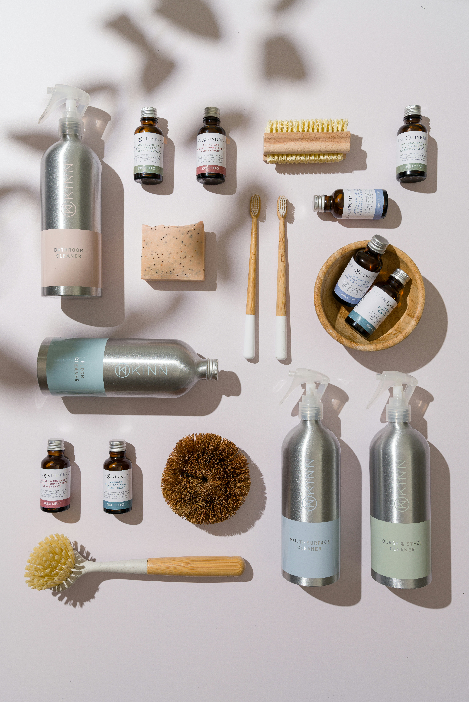

Siivouksen tärkeimmät tarvikkeet
Siisti koti ei vaadi siivousvälinevarastoa, vaan muutamilla hyvillä, harkitusti valituilla välineillä siivoat koko kodin.

Siisti koti ei vaadi siivousvälinevarastoa, vaan muutamilla hyvillä, harkitusti valituilla välineillä siivoat koko kodin.
